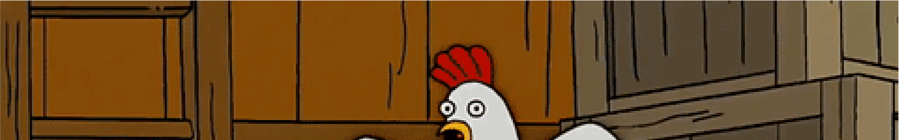

Did You Choose
The Chicken ?

Sorry, but I Don't Think So :(
1.
통계적으로 시간적 인과관계를 추정해보면 달걀이 먼저인 것으로 나온다. 달걀 수는 닭의 수를 예측하는데 도움을 주지만 닭의 수는 달걀의 수를 예측하는데 도움을 주지 않는다는 것.
-Granger-Causality for the masses
2.
여담으로 여러 포털 사이트에서 검색 결과를 보면 대부분의 사람들이 '닭이 먼저냐, 달걀(혹은 알)이 먼저냐'라는 문장을 사용하고, '달걀이 먼저냐, 닭이 먼저냐'라는 문장은 찾아 보기가 희박하다. 사람들에게 보편화된 사고에 의해서 사회적인 순서는 닭이 먼저라고 정의할 수 있다. 그러나 한국어 문장에서 짧은 단어가 먼저 오는 것이 자연스럽기 때문이지, 닭을 먼저라고 생각해서 그런 것인지는 불분명하다. 예컨대 2음절 단어가 먼저 온 '철수와 바둑이'는 자연스럽게 읽히지만, 3음절 단어가 먼저 온 '바둑이와 철수'는 어색한 감이 있다.
3.
다음 웹툰 '오늘은 자체 휴강'에서 한 번 다룬적이 있다. 이도저도 안되면 튀는게 답이라는 교훈도 준다. 작가님 닉네임이 계란계란이라서 이때는 계란이 먼저라는 결론이 났다.
4.
한편 국어사전 등재 순서로는 달걀이 먼저이고 닭이 나중이다. 달걀을 계란으로 써도 계란이 먼저다. 영어로 egg는 어류나 파충류의 알도 포함하기 때문에 진화론의 측면에서는 어떻게 해도 달걀이 먼저다.
5.
마다가스카의 펭귄의 등장인물 줄리언 대왕왈, 달걀이 먼저라고 한다. 이유는 아침에 먹으면 맛있어서이다.
6.
닭이 번식을 위해 달걀을 낳는 것이 아니라, 달걀이 번식을 위해 닭을 만드는 것'이라고 말장난을 하는 이도 있다. 국립생태원 이전 원장이 지은 책에 나온 말.
7.
영국의 한 연구팀의 연구 결과 달걀이 먼저라고 한다. 연구 결과에 따르면 "닭의 조상이 낳은 알에서 유전자 변형(진화)이 일어나 최초의 달걀이 됐고 그 알이 부화한 것이 최초의 닭"이라고는 하는데 이 연구결과에 반발하는 사람들도 많다. 닭의 조상과 닭의 경계가 명확히 구분되는 것도 아니다.